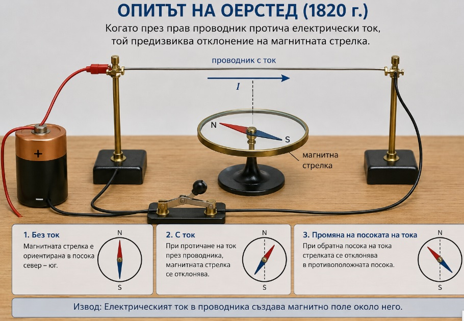

Тест № 14
Зад.1. Коя е мерната единица за магнитна сила?
а) V;
б) A;
в) W;
г) N.
Зад.2. Има ли полюси намотка, по която тече ток и как се установяват те?
а) няма полюси;
б) чрез поставяне на волтметър;
в) поставя се амперметър и се сменя посоката на тока;
г) поставя се магнитна стрелка и се сменя посоката на тока.
Зад.3. По кое правило може да се установи кой е северният полюс на намотката?
а) правило на опънатите пръсти на лявата ръка;
б) правило на опънатите пръсти на дясната ръка;
в) правило на свитите пръсти на дясната ръка;
г) правило на свитите пръсти на лявата ръка.
Зад.4. Ако поставим постоянен магнит в близост до намотка с ток и те се привлекат, а после сменим посоката на тока през намотката ще се промени ли нещо? Какво ще стане? Защо?
Зад.5. Ще се промени ли магнитната сила, с която си взаимодействат две намотки с ток, ако увеличим тока през първата намотка два пъти?
а) силата ще намалее два пъти;
б) силата ще намалее четири пъти;
в) силата ще се увеличи четири пъти;
г) силата ще се увеличи два пъти.
Зад.6. Силовите линии на намотка с ток са:
а) успоредни една на друга;
б) прави линии, радиално разположени;
в) криви затворени линии;
г) концентрични окръжности.
.

.
.
Опит на Оерстед
Магнитна стрелка и проводник